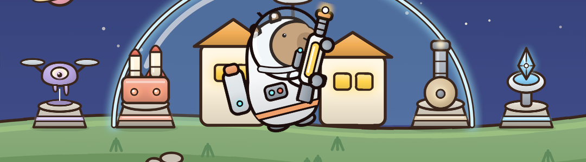
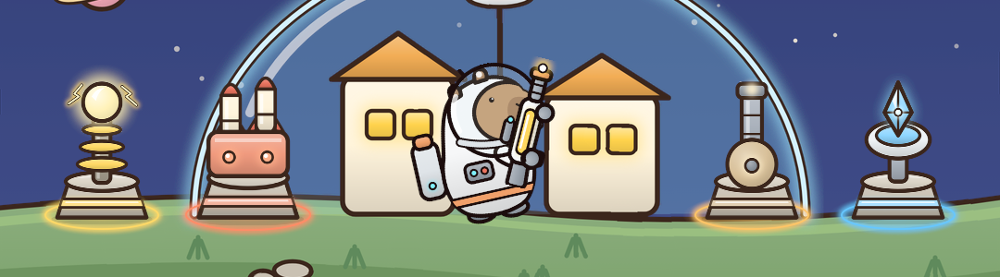
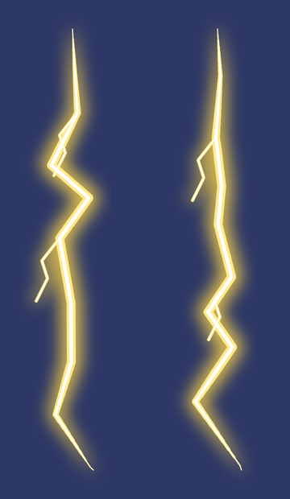
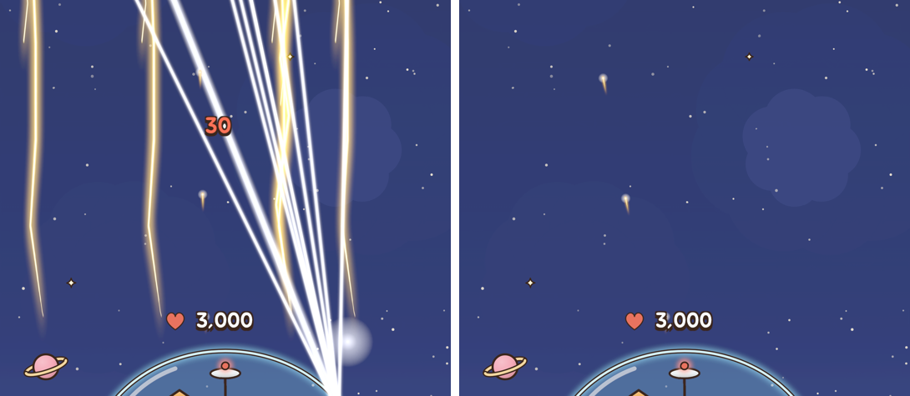
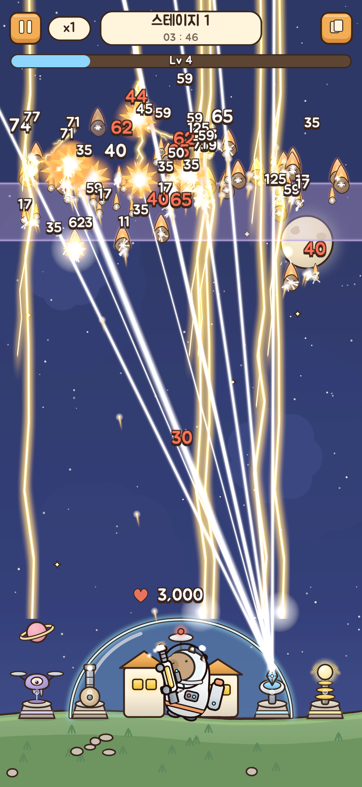
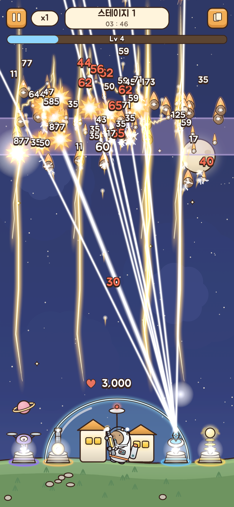

1차 수정안 — 2차 의견 반영 (3차)
2026-11-16 저녁 · 1차_수정안_결과_2.html 의견 반영 (문제없음 4개는 그대로) · 자동 시험 오류 0 · 왼쪽/위 = 전(2차), 오른쪽/아래 = 뒤
먼저 알려 드릴 것
- 대장 카피 크기는 말씀하신 0.7~0.8 의 가운데 0.75배로 했습니다 (그림을 작게 다시 뽑아 흐려지지 않음). 더 줄이거나 키울 땐 숫자 하나(
tools/earth_export.py의GK)입니다. - 터렛 아래 빛 고리는 처음엔 "빛 더하기"로 넣었는데 밝은 풀밭 위에서 하얗게만 보여서(캡처로 확인) 보통 색으로 바꿔 속성 색이 보이게 했습니다. 고리는 천천히 숨 쉬듯 밝아졌다 어두워집니다.
- 새 터렛이 놓일 때: 톡 커지며 나타남(0.4초) + 속성 색 링 · 빛 · 위로 튀는 불꽃 12개.
① 대장 카피 크기 — "너무 큼, 0.7~0.8 정도로"


위 = 2차, 아래 = 지금 (0.75배 · 터렛 아래 속성 색 빛 고리)
② 관통탄 — "카피 기본 탄과 거의 비슷함 → 조금 크고 눈에 띄게"

③ 벼락 끝 — "잘린 느낌보다 하나의 벼락처럼"


④ 전투 화면

